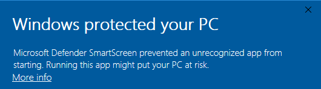
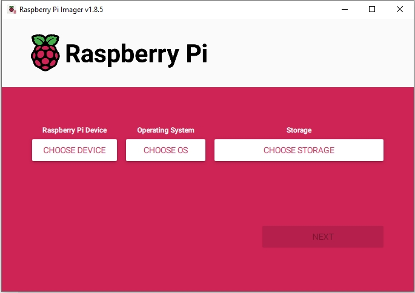
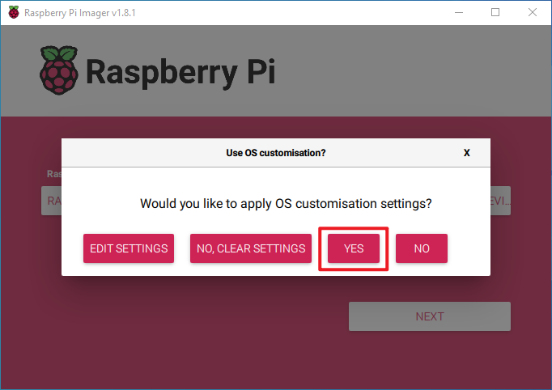
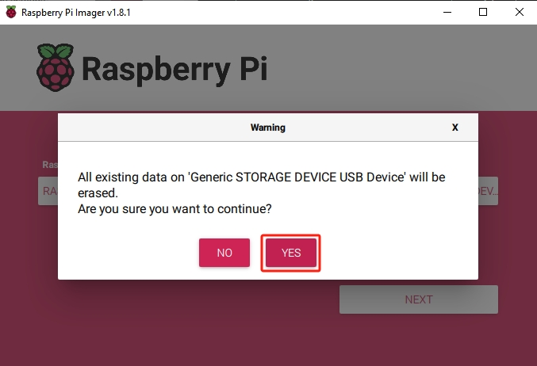
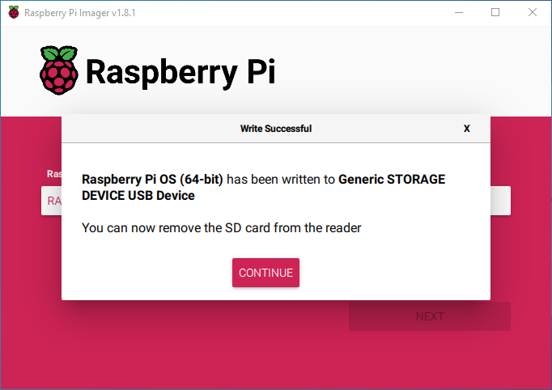

Note
Bonjour et bienvenue dans la Communauté Facebook des passionnés de Raspberry Pi, Arduino et ESP32 de SunFounder ! Plongez plus profondément dans l’univers des Raspberry Pi, Arduino et ESP32 avec d’autres passionnés.
Pourquoi rejoindre ?
Support d’experts : Résolvez les problèmes après-vente et les défis techniques avec l’aide de notre communauté et de notre équipe.
Apprendre et partager : Échangez des astuces et des tutoriels pour améliorer vos compétences.
Aperçus exclusifs : Accédez en avant-première aux annonces de nouveaux produits et aux aperçus.
Réductions spéciales : Profitez de réductions exclusives sur nos produits les plus récents.
Promotions festives et cadeaux : Participez à des cadeaux et des promotions de vacances.
👉 Prêt à explorer et à créer avec nous ? Cliquez [Ici] et rejoignez-nous aujourd’hui !
Installer le Système d’Exploitation
Composants Nécessaires
Raspberry Pi 5
Un ordinateur personnel
Une carte Micro SD
Étapes d’Installation
Visitez la page de téléchargement du logiciel Raspberry Pi à Raspberry Pi Imager. Choisissez la version de l’Imager compatible avec votre système d’exploitation. Téléchargez et ouvrez le fichier pour lancer l’installation.

Un avertissement de sécurité peut apparaître pendant l’installation, selon votre système d’exploitation. Par exemple, Windows pourrait afficher un message d’avertissement. Dans ce cas, sélectionnez Plus d’infos puis Exécuter quand même. Suivez les instructions à l’écran pour terminer l’installation du Raspberry Pi Imager.
Insérez votre carte SD dans le lecteur de carte SD de votre ordinateur ou portable.
Lancez l’application Raspberry Pi Imager en cliquant sur son icône ou en tapant
rpi-imagerdans votre terminal.Cliquez sur CHOOSE DEVICE et sélectionnez votre modèle spécifique de Raspberry Pi dans la liste.

Cliquez ensuite sur Choose OS et sélectionnez un système d’exploitation pour l’installation.

Cliquez sur Choose Storage et sélectionnez le périphérique de stockage approprié pour l’installation.
Note
Assurez-vous de sélectionner le bon périphérique de stockage. Pour éviter toute confusion, déconnectez tout périphérique de stockage supplémentaire si plusieurs sont connectés.

Cliquez sur NEXT puis EDIT SETTINGS pour personnaliser les paramètres de votre OS. Si vous avez un moniteur pour votre Raspberry Pi, vous pouvez ignorer les étapes suivantes et cliquer sur “Yes” pour commencer l’installation. Vous pourrez ajuster les autres paramètres plus tard sur le moniteur.

Définissez un nom d’hôte pour votre Raspberry Pi.
Note
Le nom d’hôte est l’identifiant réseau de votre Raspberry Pi. Vous pouvez accéder à votre Pi en utilisant
<hostname>.localou<hostname>.lan.
Créez un nom d’utilisateur et un mot de passe pour le compte administrateur du Raspberry Pi.
Note
Établir un nom d’utilisateur et un mot de passe uniques est essentiel pour sécuriser votre Raspberry Pi, qui n’a pas de mot de passe par défaut.

Configurez le réseau sans fil en fournissant le SSID et le mot de passe de votre réseau.
Note
Définissez le
pays du réseau sans filsur le code à deux lettres ISO/IEC alpha2 code correspondant à votre emplacement.
Cliquez sur SERVICES et activez SSH pour un accès distant sécurisé basé sur un mot de passe. N’oubliez pas de sauvegarder vos paramètres.

Confirmez vos paramètres sélectionnés en cliquant sur Yes.
Si la carte SD contient des données existantes, assurez-vous de les sauvegarder pour éviter toute perte de données. Cliquez sur Yes si aucune sauvegarde n’est nécessaire.
Le processus d’installation du système d’exploitation commencera sur la carte SD. Une boîte de dialogue de confirmation apparaîtra une fois l’installation terminée.
